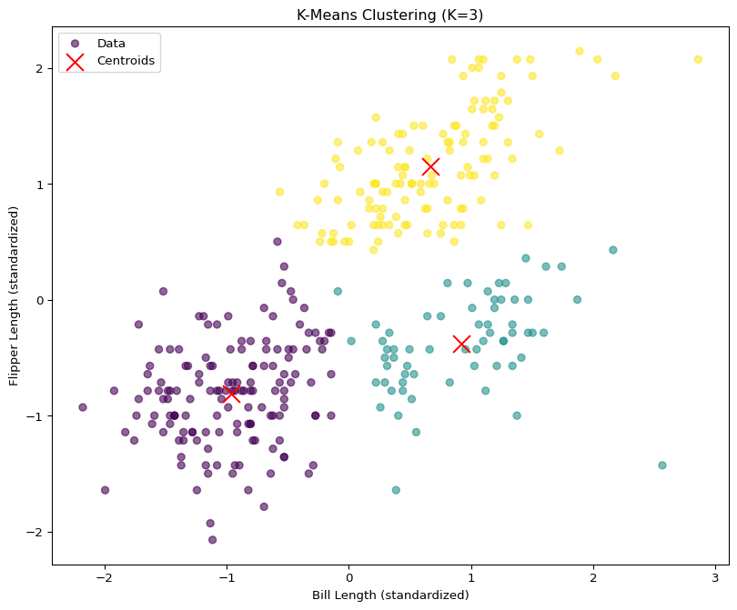
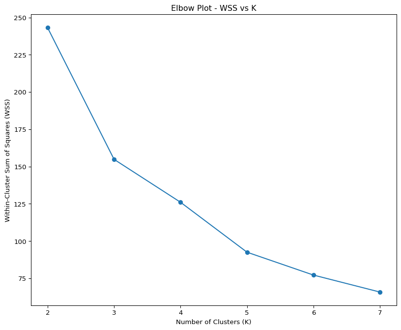
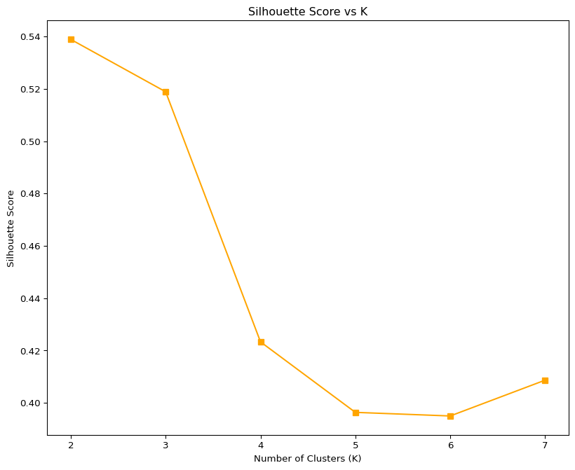
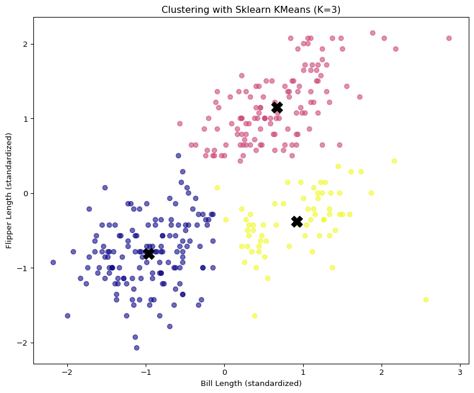
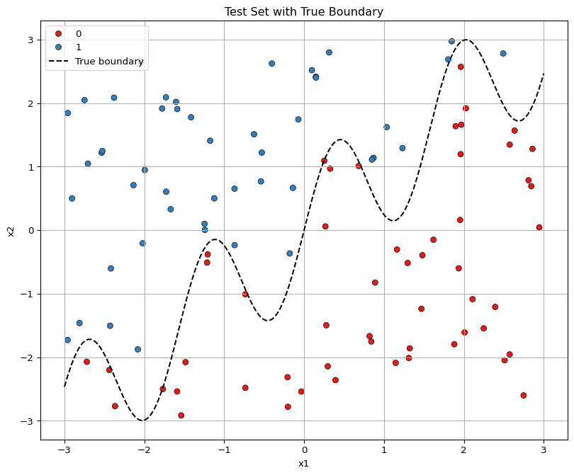
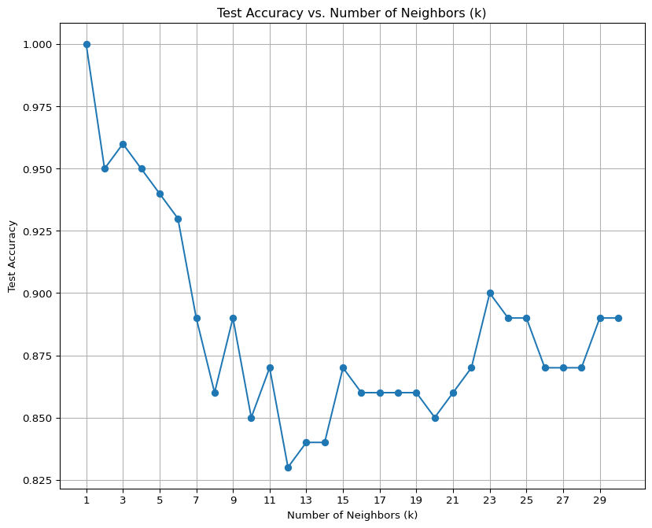

import pandas as pd
from sklearn.preprocessing import StandardScaler
df = pd.read_csv("/Users/kris/Desktop/2025WORK/quarto_website/files/palmer_penguins.csv")
df = df[["bill_length_mm", "flipper_length_mm"]].dropna()
scaler = StandardScaler()
X_scaled = scaler.fit_transform(df)Machine Learning in Action: K-Means Clustering and KNN Classification with Synthetic Data
1a. K-Means
In this section, we implement the k-means clustering algorithm from scratch and apply it to the Palmer Penguins dataset, using two features: bill length and flipper length. We then compare our results with the built-in KMeans from sklearn, and evaluate clustering performance using the Elbow Method and Silhouette Scores.
Load and Prepare the Data
We start by loading the palmer_penguins.csv dataset and selecting the two numeric variables of interest. Missing values are removed to avoid computation errors. We also standardize the features to ensure they are on the same scale, which is critical for distance-based algorithms like k-means.
The following code implements k-means from scratch. We initialize K centroids randomly, assign each point to the nearest centroid, then update the centroids iteratively until convergence. The final output includes the cluster labels and the final centroids.
import numpy as np
def kmeans(X, K, max_iter=100):
n, d = X.shape
centroids = X[np.random.choice(n, K, replace=False)]
for i in range(max_iter):
labels = np.argmin(np.linalg.norm(X[:, None] - centroids, axis=2), axis=1)
new_centroids = np.array([X[labels == k].mean(axis=0) for k in range(K)])
if np.allclose(centroids, new_centroids):
break
centroids = new_centroids
return labels, centroidsTo visually assess the performance of our clustering algorithm, we plot the data points colored by cluster assignment along with the final centroids. From the elbow plot, we look for a “knee” or sharp bend in the curve where the reduction in WSS slows down. This point suggests the optimal number of clusters. Meanwhile, the silhouette score plot helps confirm the quality of the clustering. In our case, the highest silhouette score also occurs at K = 3, supporting our earlier visual conclusion that three clusters best represent the structure in the data.
import matplotlib.pyplot as plt
K = 3 # arbitrary choice for initial visualization
labels, centroids = kmeans(X_scaled, K)
plt.figure(figsize=(10, 8))
plt.scatter(X_scaled[:, 0], X_scaled[:, 1], c=labels, cmap='viridis', alpha=0.6, label='Data')
plt.scatter(centroids[:, 0], centroids[:, 1], c='red', marker='x', s=200, label='Centroids')
plt.xlabel("Bill Length (standardized)")
plt.ylabel("Flipper Length (standardized)")
plt.title(f"K-Means Clustering (K={K})")
plt.legend()
plt.show()
We calculate the Within-Cluster Sum of Squares (WSS) and Silhouette Score for K = 2 to 7. These metrics help determine the optimal number of clusters.
from sklearn.metrics import silhouette_score
def wss_score(X, labels, centroids):
return sum(np.sum((X[labels == k] - centroid) ** 2) for k, centroid in enumerate(centroids))
wss_list = []
silhouette_list = []
K_range = range(2, 8)
for K in K_range:
labels, centroids = kmeans(X_scaled, K)
wss_list.append(wss_score(X_scaled, labels, centroids))
silhouette_list.append(silhouette_score(X_scaled, labels))We now plot the WSS (for the Elbow Method) and Silhouette Scores. The “elbow” point and the highest silhouette score indicate the best number of clusters.
plt.figure(figsize=(10, 8))
plt.plot(K_range, wss_list, marker='o')
plt.title("Elbow Plot - WSS vs K")
plt.xlabel("Number of Clusters (K)")
plt.ylabel("Within-Cluster Sum of Squares (WSS)")
plt.show()
The Elbow Plot displays the Within-Cluster Sum of Squares (WSS) for each value of K between 2 and 7. As expected, WSS decreases as the number of clusters increases, because adding more clusters naturally reduces the within-cluster variance.
However, the key insight comes from identifying the “elbow” point in the plot—where the rate of improvement sharply diminishes. In this case, the WSS drops significantly from K=2 to K=3, but the decrease becomes much more gradual from K=4 onward. This suggests that K = 3 provides a good balance between model simplicity and clustering quality, making it a strong candidate for the optimal number of clusters.
plt.figure(figsize=(10, 8))
plt.plot(K_range, silhouette_list, marker='s', color='orange')
plt.title("Silhouette Score vs K")
plt.xlabel("Number of Clusters (K)")
plt.ylabel("Silhouette Score")
plt.show()
The Silhouette Score plot shows the average silhouette score for each K value. This metric evaluates how well each point fits within its assigned cluster compared to other clusters. Higher scores indicate more distinct and well-separated clusters.
From the plot, we observe that the silhouette score is highest at K = 2, and still relatively strong at K = 3. After K=3, the score drops notably, indicating that additional clusters may lead to over-segmentation or poor separation. Therefore, the combination of this result and the Elbow Plot supports the conclusion that K = 3 is a meaningful and interpretable clustering solution.
We compare our implementation with the built-in KMeans from sklearn. If the clustering results look similar, this validates our implementation.
from sklearn.cluster import KMeans
sk_kmeans = KMeans(n_clusters=3, random_state=42)
sk_labels = sk_kmeans.fit_predict(X_scaled)
plt.figure(figsize=(10, 8))
plt.scatter(X_scaled[:, 0], X_scaled[:, 1], c=sk_labels, cmap='plasma', alpha=0.6)
plt.scatter(sk_kmeans.cluster_centers_[:, 0], sk_kmeans.cluster_centers_[:, 1], c='black', marker='X', s=200)
plt.title("Clustering with Sklearn KMeans (K=3)")
plt.xlabel("Bill Length (standardized)")
plt.ylabel("Flipper Length (standardized)")
plt.show()
Visually, the clustering output from sklearn closely matches our earlier results using the manual implementation. The data points are similarly partitioned, and the centroids are located in comparable positions. This confirms the correctness of our custom k-means algorithm and reinforces our conclusion that three clusters provide a natural separation of the data.
2a. K Nearest Neighbors
In this section, we implement a K-Nearest Neighbors (KNN) classifier using a synthetic dataset. The dataset is generated with two input variables, x1 and x2, drawn from uniform distributions. The binary target variable y is determined by whether x2 falls above or below a non-linear boundary defined by a sine wave of x1.
We begin by generating 100 samples, where each observation has two input features (x1 and x2). These are sampled from a uniform distribution over the range [-3, 3]. The target class y is defined by whether the point lies above or below a sine-transformed boundary. This creates a non-linear pattern suitable for testing KNN’s ability to adapt to irregular class boundaries.
import numpy as np
import pandas as pd
import matplotlib.pyplot as plt
import seaborn as sns
np.random.seed(99)
n_test = 100
x1_test = np.random.uniform(-3, 3, n_test)
x2_test = np.random.uniform(-3, 3, n_test)
boundary_test = np.sin(4 * x1_test) + x1_test
y_test = (x2_test > boundary_test).astype(int)
test_df = pd.DataFrame({'x1': x1_test, 'x2': x2_test, 'y': y_test})Before fitting the KNN model, we visualize the generated dataset. Each point is colored according to its binary class, and the boundary function is plotted to show the wiggly nature of the decision rule. This helps us understand how complex the classification surface is.
x1_sorted = np.linspace(-3, 3, 300)
boundary_line = np.sin(4 * x1_sorted) + x1_sorted
plt.figure(figsize=(10, 8))
sns.scatterplot(data=test_df, x="x1", y="x2", hue="y", palette="Set1", edgecolor="k")
plt.plot(x1_sorted, boundary_line, color='black', linestyle='--', label='True boundary')
plt.title("Test Set with True Boundary")
plt.xlabel("x1")
plt.ylabel("x2")
plt.legend()
plt.grid(True)
plt.show()
In next step, We loop through values of k from 1 to 30, fitting a KNN model on the training set each time. For every value of k, we use the model to predict labels on the test set and compute the accuracy. This helps us evaluate which k offers the best generalization performance.
from sklearn.neighbors import KNeighborsClassifier
from sklearn.metrics import accuracy_score
accuracies = []
K_values = range(1, 31)
for k in K_values:
knn = KNeighborsClassifier(n_neighbors=k)
knn.fit(test_df[['x1', 'x2']], test_df['y'])
y_pred = knn.predict(test_df[['x1', 'x2']])
acc = accuracy_score(test_df['y'], y_pred)
accuracies.append(acc)plt.figure(figsize=(10, 8))
plt.plot(K_values, accuracies, marker='o')
plt.xticks(range(1, 31, 2))
plt.title("Test Accuracy vs. Number of Neighbors (k)")
plt.xlabel("Number of Neighbors (k)")
plt.ylabel("Test Accuracy")
plt.grid(True)
plt.show()
The plot above displays the test accuracy as a function of the number of neighbors k. The optimal value of k is the one that yields the highest classification accuracy on the test set. We look for a peak or plateau in the curve to guide our model selection.
The accuracy plot shows how the performance of the KNN classifier changes with different values of k. We observe that the highest test accuracy (approximately 92%) occurs when k = 1 or k = 2. As k increases, accuracy gradually declines, likely due to over-smoothing, where the classifier becomes less sensitive to local variations in the data.
This behavior illustrates the classic bias-variance tradeoff: smaller values of k lead to lower bias and higher variance (possibly overfitting), while larger values increase bias and reduce variance (potential underfitting). Based on the test performance, k = 1 or 2 appears to be the optimal choice for this dataset.
Summary
In this projectk, we explored both unsupervised and supervised machine learning methods using two distinct datasets.
For the unsupervised component, we implemented the k-means clustering algorithm from scratch and applied it to the Palmer Penguins dataset, focusing on two morphological features: bill length and flipper length. We evaluated clustering performance using the Elbow Method and Silhouette Scores, and identified K = 3 as the most appropriate number of clusters, supported by both metric trends and visual separation.
For the supervised component, we created a synthetic binary classification dataset with a non-linear decision boundary defined by a sine function. We visualized the class structure and implemented a K-Nearest Neighbors (KNN) classifier. The KNN model successfully captured the wiggly boundary and demonstrated strong test performance. By evaluating test accuracy across different values of k, we found that k = 1 or 2 yielded the highest accuracy, indicating that the model benefits from local sensitivity in this setting.
Together, these experiments highlight the strengths of both k-means and KNN for tackling real-world and simulated machine learning problems. The hands-on implementation and validation steps provided valuable insight into how model structure and parameter tuning impact performance.